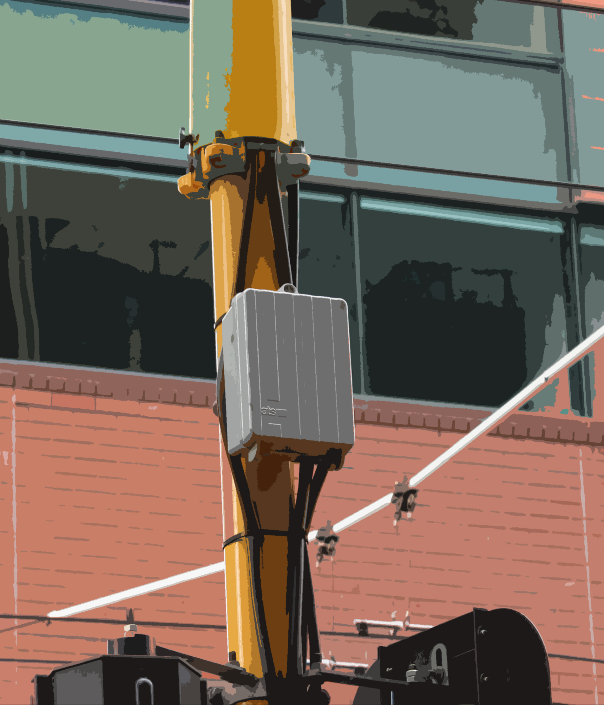

Wellington city's network infrastructure is hidden in plain sight if you know where to
look for them.At the beginning, it may seem difficult to identify them, but once you figure
out what you are looking for things will start to fall into place. Below is some network
infrastructure in the city that were observed and documented.
Manhole covers are one point of entry into the city's underground world, and their designs indicate
what part of that world they connect to. Here are some manhole covers that might help you identify
pieces of the internet and networks.
|
description |
| description |
Sometimes you'll see a manhole cover that is surrounded with colourful markings. Whenever a contractor
or construction company plans to do street excavation, utility companies will mark out the location
of their underground cables so that the contractor knows to watch out for them.
 |
description |
Admittedly, much of this guide has focused on seeing internet-connected networks in the field networks
that, for the most part, the reader has access to. But the city is also full of networked objects that,
while often serving a public interest, aren't connected to public networks. These sensors vary from monitoring
vehicular traffic to recording water usage. Surveillance cameras are perhaps one of the more noticeable
and contested forms of networked objects in public space. The public "connects" to surveillance networks all
the time, albeit involuntarily, and this section offers a view into who controls some of the ubiquitous networks.
 |
MTA CamerasThis type of cameras can be spotted mainly on publics transport and some main interactions in the city, next to traffic lights. These cameras monitor and storedata that would be obtained when needed. |
Tracking things on the ground can sometimes be tricky markings and manhole covers get worn down and faded,
they're sometimes in the middle of the road, and it's easy to bump into things when looking down all the time.
Here are some other objects that indicate pieces of the network.
|  | Traffic Signal ControllersThese grey signal control boxes attached to traffic signal posts are just onepiece of a massive system of networked objects. Each signal control box contains wireless routing equipment and traffic controllers that connect back to a fibre hub. |
 |
Distributed Antenna SystemsA Distributed Antenna System (DAS) is basically a way to expand a cell network'sreach, adding capacity in under-covered areas. They're a little easier to find on the street because they're not on top of buildings they're attached to street poles and linked to underground fibre-optic networks. |